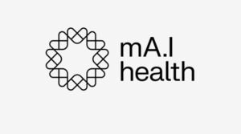

Trade Mark Journal No.2025/044 31 October 2025
WO0000001881070 (9)
Office of origin: New Zealand
Date of International Registration:12 September 2025
Date of designation in the UK:
12 September 2025

International priority date claimed: 9 September 2025
(New Zealand)
(1302631)
- Class 9
- Software in the field of healthcare, wellness, patient care, medicine and medical support services; downloadable software applications for storing, managing, retrieving, evaluating and transmitting medical records and health data; software for storing, managing, retrieving, evaluating and transmitting medical records and health data; artificial intelligence (AI) software for health data analysis, alerts, reminders, and emergency summaries; software for enabling secure access to health information across multiple devices; software for managing sub-accounts and shared access; software for generating health summaries and monitoring health metrics; downloadable software for communicating and sharing health-related data; software for integrating and consolidating health data from multiple sources; software for enabling biometric logins and secure authentication; downloadable software for multilingual health data management and translation; software for scheduling, tracking, and reminding users of medical appointments, tests, and medication schedules; software for enabling user-generated notes and annotations within health records; software for charting and visualising health data; downloadable software for corporate wellness and employee health management; software for use in connection with wearable devices and health monitoring tools.
MA.I HEALTH LIMITED
Representative: Duncan Cotterill Lawyers, PO Box 10376, Wellington 6140, NEW ZEALAND